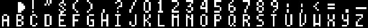
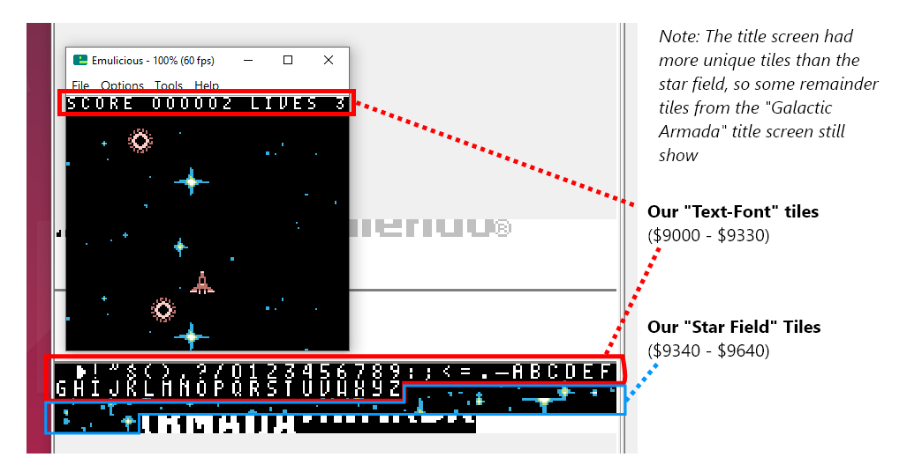

Punto di ingresso
We’ll start this tutorial out like the previous, with our “header” section (at address: $100). We’re also going to declare some global variables that will be used throughout the game.
wLastKeysandwCurKeysare used for joypad inputwGameStatewill keep track what our current game state is
INCLUDE "src/main/utils/hardware.inc"
SECTION "GameVariables", WRAM0
wLastKeys:: db
wCurKeys:: db
wNewKeys:: db
wGameState::db
SECTION "Header", ROM0[$100]
jp EntryPoint
ds $150 - @, 0 ; Make room for the header
EntryPoint:
dopo l’etichetta EntryPoint, faremo quanto segue:
- set our default game state
- initiate gb-sprobj-lib, the sprite library we’re going to use
- setup our display registers
- load tile data for our font into VRAM.
The tile data we are going to load is used by all game states, which is why we’ll do it here & now, for them all to use.
This character-set is called “Area51”. It, and more 8x8 pixel fonts can ne found here: https://damieng.com/typography/zx-origins/ . These 52 tiles will be placed at the beginning of our background/window VRAM region.

One important thing to note. Character maps for each letter must be defined. This let’s RGBDS know what byte value to give a specific letter.
For the Galactic Armada space mapping, we’re going off the “text-font.png” image. Our space character is the first character in VRAM. Our alphabet starts at 26. Special additions could be added if desired. For now, this is all that we’ll need. We’ll define that map in “src/main/utils/macros/text-macros.inc”.
; The character map for the text-font
CHARMAP " ", 0
CHARMAP ".", 24
CHARMAP "-", 25
CHARMAP "a", 26
CHARMAP "b", 27
CHARMAP "c", 28
CHARMAP "d", 29
CHARMAP "e", 30
CHARMAP "f", 31
CHARMAP "g", 32
CHARMAP "h", 33
CHARMAP "i", 34
CHARMAP "j", 35
CHARMAP "k", 36
CHARMAP "l", 37
CHARMAP "m", 38
CHARMAP "n", 39
CHARMAP "o", 40
CHARMAP "p", 41
CHARMAP "q", 42
CHARMAP "r", 43
CHARMAP "s", 44
CHARMAP "t", 45
CHARMAP "u", 46
CHARMAP "v", 47
CHARMAP "w", 48
CHARMAP "x", 49
CHARMAP "y", 50
CHARMAP "z", 51
Getting back to our entry point. Were going to wait until a vertical blank begins to do all of this. We’ll also turn the LCD off before loading our tile data into VRAM..
; Shut down audio circuitry
xor a
ld [rNR52], a
; We don't actually need another xor a here, because the value of A doesn't change between these two instructions
ld [wGameState], a
; Wait for the vertical blank phase before initiating the library
call WaitForOneVBlank
; from: https://github.com/eievui5/gb-sprobj-lib
; The library is relatively simple to get set up. First, put the following in your initialization code:
; Initilize Sprite Object Library.
call InitSprObjLibWrapper
; Turn the LCD off
xor a
ld [rLCDC], a
; Load our common text font into VRAM
call LoadTextFontIntoVRAM
; Turn the LCD on
ld a, LCDCF_ON | LCDCF_BGON|LCDCF_OBJON | LCDCF_OBJ16 | LCDCF_WINON | LCDCF_WIN9C00
ld [rLCDC], a
; During the first (blank) frame, initialize display registers
ld a, %11100100
ld [rBGP], a
ld [rOBP0], a
Even though we haven’t specifically defined a color palette. The emulicious emulator may automatically apply a default color palette if in “Automatic” or “Gameboy Color” mode.
Instead of ld a, 0, we can use xor a to set a to 0. It takes one byte less, which matters a lot on the Game Boy.
In the above snippet you saw use of a function called WaitFOrOneVBLank. We’ve setup some vblank utility functions in the “src/main/utils/vblank-utils.asm” file:
INCLUDE "src/main/utils/hardware.inc"
SECTION "VBlankVariables", WRAM0
wVBlankCount:: db
SECTION "VBlankFunctions", ROM0
WaitForOneVBlank::
; Wait a small amount of time
; Save our count in this variable
ld a, 1
ld [wVBlankCount], a
WaitForVBlankFunction::
WaitForVBlankFunction_Loop::
ld a, [rLY] ; Copy the vertical line to a
cp 144 ; Check if the vertical line (in a) is 0
jp c, WaitForVBlankFunction_Loop ; A conditional jump. The condition is that 'c' is set, the last operation overflowed
ld a, [wVBlankCount]
sub 1
ld [wVBlankCount], a
ret z
WaitForVBlankFunction_Loop2::
ld a, [rLY] ; Copy the vertical line to a
cp 144 ; Check if the vertical line (in a) is 0
jp nc, WaitForVBlankFunction_Loop2 ; A conditional jump. The condition is that 'c' is set, the last operation overflowed
jp WaitForVBlankFunction_Loop
In the next section, we’ll go on next to setup our NextGameState label. Which is used for changing game states.